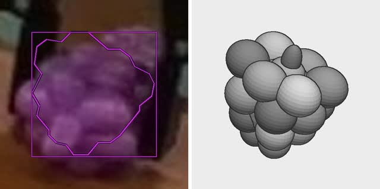
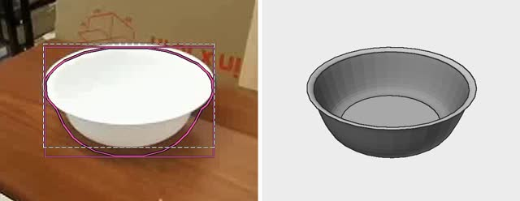

Zhaoning Wang, Siyi Chen, Jun Gao
University of Michigan
Each scene is one recorded robot episode. Left of the line is the real robot; right of it, its physics twin in Isaac Sim replays the same recorded actions. Point at a scene to move the line, click it for the full videos, and scroll sideways for more.
From one recorded demonstration to a physics scene that replays it. An agent runs each tool and checks the result before moving on. The steps play on their own; drag the scene to look around.


GPT-6 judge: accepted the real video left of the line, the replay right of it
The demonstration also teaches a robot agent. Its twin is reshuffled into new layouts, where the agent practises the task and revises its playbook; the model's weights never change.
Placeholder section: videos and results to come
The demonstration replayed in simulation
The same twin with the objects in new places, where the agent practises
The real robot doing the tasks.
Placeholder section: real robot videos to come
Task name
Task name
Task name
What the agent learned by practising in the twin, run back on the real robot.
Placeholder section: videos to come
The robot is taught the task once.
The agent practises new layouts in simulation.
The practised playbook runs on new real layouts.